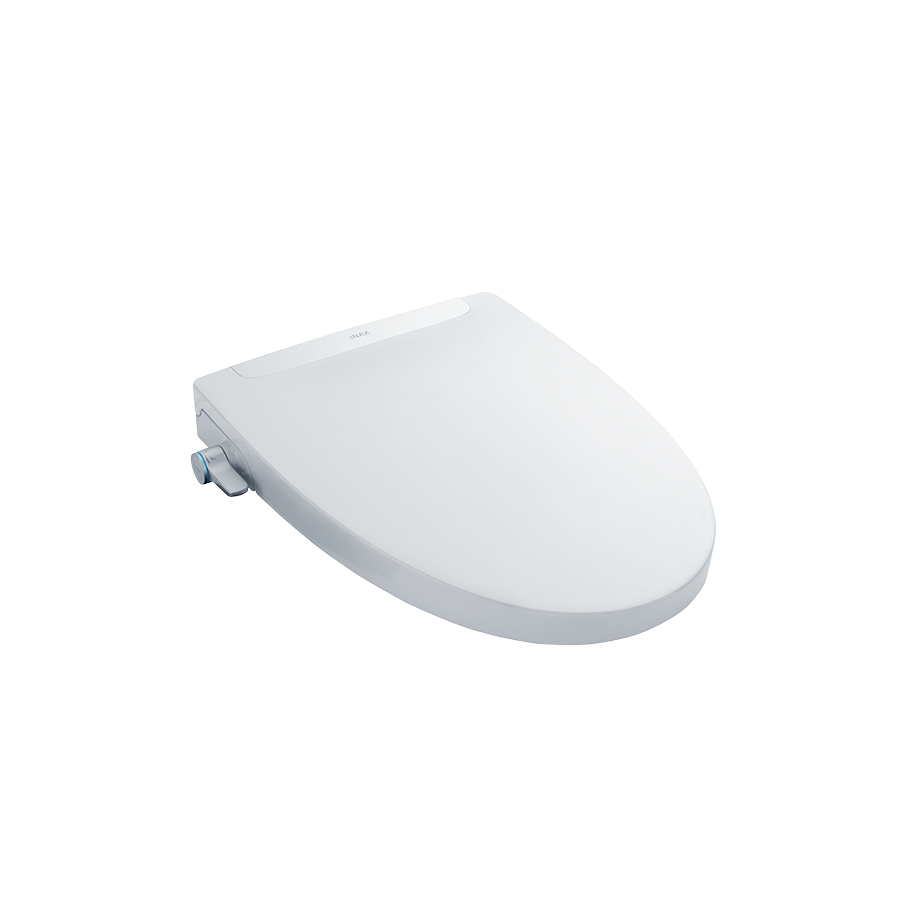
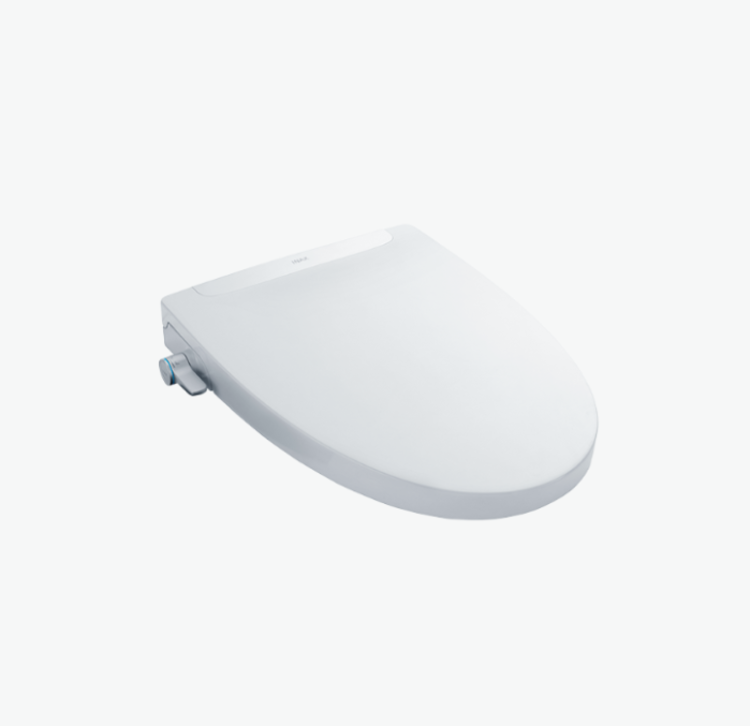
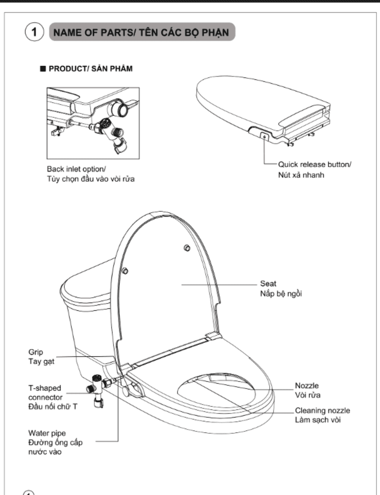

Nắp rửa cơ CW-S32VN-1 tựa như bước nâng cấp hoàn hảo, mang đến tiêu chuẩn vệ sinh mới trong phòng tắm, phòng vệ sinh: sạch sẽ vượt trội, nhẹ nhàng tinh tế và an toàn tuyệt đối.Là thiết bị vệ sinh thuộc thương hiệu INAX, sản phẩm được tích hợp công nghệ Nhật Bản tiên tiến với thiết kế hiện đại, mang đến trải nghiệm thoải mái khi sử dụng bồn cầu vệ sinh.Những điểm nổi bật của nắp rửa cơ CW-S32VN-1Thiết kế tinh tế, màu sắc trang nhãNắp bồn cầu rửa cơ CW-S32VN-1 được thiết kế theo kiểu dáng mềm mại, phù hợp với nhiều mẫu bồn cầu hiện đại. Với màu sắc trắng truyền thống và sang trọng, nắp rửa dễ dàng hòa hợp với mọi phong cách thiết kế phòng tắm, từ tối giản đến cao cấp.Bên cạnh đó, CW-S32VN-1 còn sở hữu thiết kế hiện đại và đường nét gọn gàng, vừa tăng tính thẩm mỹ vừa giúp việc vệ sinh, lau chùi trở nên đơn giản, giữ cho không gian luôn sáng sủa, sạch sẽ.Công nghệ kháng khuẩn tối ưuToàn bộ nắp và bệ ngồi được chế tạo bằng vật liệu đặc biệt có khả năng kháng khuẩn hiệu quả. Công nghệ này giúp ức chế sự phát triển của vi khuẩn, nấm mốc trên bề mặt, tạo ra một môi trường ngồi an toàn, vệ sinh hơn, đặc biệt quan trọng với gia đình có người già và trẻ nhỏ.Chăm sóc cá nhân với chức năng rửa chuyên biệtĐiểm ưu việt nhất của Nắp bồn cầu rửa cơ CW-S32VN-1 chính là công nghệ phun rửa tiên tiến hoạt động hoàn toàn bằng áp lực nước cấp mà không cần dùng điện:Hệ thống hai đầu vòi riêng biệt: Sản phẩm được trang bị hai đầu vòi phun riêng biệt, được thiết kế tỉ mỉ để tối ưu hóa hiệu quả làm sạch cho từng nhu cầu:Vòi phun rửa phía sau: Cung cấp chức năng vệ sinh sau với dòng nước nhẹ nhàng nhưng hiệu quả, đảm bảo sự sạch sẽ tuyệt đối, thay thế cho giấy vệ sinh truyền thống vốn có thể gây kích ứng hoặc không sạch hoàn toàn.Vòi phun dành riêng cho phụ nữ: Đầu vòi này được đặt ở vị trí tối ưu và tạo ra dòng chảy dịu nhẹ hơn, chuyên biệt cho việc vệ sinh phụ nữ, mang lại sự nhẹ nhàng và tinh tế, đặc biệt hữu ích trong những ngày đặc biệt hoặc cho các bà mẹ đang mang thai.Độ tương thích cao, dễ dàng lắp đặtNắp rửa cơ INAX CW-S32VN-1 được thiết kế để lắp đặt đồng bộ với các mẫu bồn cầu phổ biến của INAX, đảm bảo sự ăn khớp hoàn hảo cả về chức năng và thẩm mỹ. Sản phẩm được gợi ý lắp đặt cùng các mẫu bồn cầu sau: bồn cầu 1 khối AC-969, bồn cầu 2 khối AC-504VAN và bồn cầu 2 khối C-504VAN. Sự tương thích này giúp người tiêu dùng dễ dàng lựa chọn bộ sản phẩm hoàn chỉnh, tạo nên một tổng thể hài hòa và thống nhất cho phòng tắm.Video hướng dẫn lắp đặt sản phẩmTên các bộ phận Nắp rửa cơ CW-S32VN-1Hướng dẫn lắp đặt Nắp rửa cơ CW-S32VN-1Tham khảo tại file: HDLS CW-S32VN-1.pdfThông số kỹ thuậtChất liệu-Kiểu dángHình ovalĐặc điểm- Thiết kế hiện đại - Nắp và bệ ngồi kháng khuẩn - Hai đầu vòi riêng biệt, một đầu vòi dành riêng cho phụ nữ - Cung cấp các chức năng vệ sinh như phun rửa phía sau, đem lại cảm giác nhẹ nhàng, sạch sẽThương hiệuINAXMàu sắcTrắngKhác- Gợi ý sản phẩm lắp đặt: bồn cầu 1 khối AC-969, bồn cầu 2 khối AC-504VAN và bồn cầu 2 khối C-504VAN - Hotline tư vấn và bảo hành: 18006633
Nắp rửa cơ CW-S32VN-1
Nắp rửa điện tử thương hiệu INAX.
Đã cập nhật danh sách yêu thích.
DANH MỤC: Nắp rửa điện tử
MÃ SẢN PHẨM: CW-S32VN-1
DEPTH: mm
HEIGHT: mm
WIDTH: mm
Nắp rửa cơ CW-S32VN-1 tựa như bước nâng cấp hoàn hảo, mang đến tiêu chuẩn vệ sinh mới trong phòng tắm, phòng vệ sinh: sạch sẽ vượt trội, nhẹ nhàng tinh tế và an toàn tuyệt đối.Là thiết bị vệ sinh thuộc thương hiệu INAX, sản phẩm được tích hợp công nghệ Nhật Bản tiên tiến với thiết kế hiện đại, mang đến trải nghiệm thoải mái khi sử dụng bồn cầu vệ sinh.Những điểm nổi bật của nắp rửa cơ CW-S32VN-1Thiết kế tinh tế, màu sắc trang nhãNắp bồn cầu rửa cơ CW-S32VN-1 được thiết kế theo kiểu dáng mềm mại, phù hợp với nhiều mẫu bồn cầu hiện đại. Với màu sắc trắng truyền thống và sang trọng, nắp rửa dễ dàng hòa hợp với mọi phong cách thiết kế phòng tắm, từ tối giản đến cao cấp.Bên cạnh đó, CW-S32VN-1 còn sở hữu thiết kế hiện đại và đường nét gọn gàng, vừa tăng tính thẩm mỹ vừa giúp việc vệ sinh, lau chùi trở nên đơn giản, giữ cho không gian luôn sáng sủa, sạch sẽ.Công nghệ kháng khuẩn tối ưuToàn bộ nắp và bệ ngồi được chế tạo bằng vật liệu đặc biệt có khả năng kháng khuẩn hiệu quả. Công nghệ này giúp ức chế sự phát triển của vi khuẩn, nấm mốc trên bề mặt, tạo ra một môi trường ngồi an toàn, vệ sinh hơn, đặc biệt quan trọng với gia đình có người già và trẻ nhỏ.Chăm sóc cá nhân với chức năng rửa chuyên biệtĐiểm ưu việt nhất của Nắp bồn cầu rửa cơ CW-S32VN-1 chính là công nghệ phun rửa tiên tiến hoạt động hoàn toàn bằng áp lực nước cấp mà không cần dùng điện:Hệ thống hai đầu vòi riêng biệt: Sản phẩm được trang bị hai đầu vòi phun riêng biệt, được thiết kế tỉ mỉ để tối ưu hóa hiệu quả làm sạch cho từng nhu cầu:Vòi phun rửa phía sau: Cung cấp chức năng vệ sinh sau với dòng nước nhẹ nhàng nhưng hiệu quả, đảm bảo sự sạch sẽ tuyệt đối, thay thế cho giấy vệ sinh truyền thống vốn có thể gây kích ứng hoặc không sạch hoàn toàn.Vòi phun dành riêng cho phụ nữ: Đầu vòi này được đặt ở vị trí tối ưu và tạo ra dòng chảy dịu nhẹ hơn, chuyên biệt cho việc vệ sinh phụ nữ, mang lại sự nhẹ nhàng và tinh tế, đặc biệt hữu ích trong những ngày đặc biệt hoặc cho các bà mẹ đang mang thai.Độ tương thích cao, dễ dàng lắp đặtNắp rửa cơ INAX CW-S32VN-1 được thiết kế để lắp đặt đồng bộ với các mẫu bồn cầu phổ biến của INAX, đảm bảo sự ăn khớp hoàn hảo cả về chức năng và thẩm mỹ. Sản phẩm được gợi ý lắp đặt cùng các mẫu bồn cầu sau: bồn cầu 1 khối AC-969, bồn cầu 2 khối AC-504VAN và bồn cầu 2 khối C-504VAN. Sự tương thích này giúp người tiêu dùng dễ dàng lựa chọn bộ sản phẩm hoàn chỉnh, tạo nên một tổng thể hài hòa và thống nhất cho phòng tắm.Video hướng dẫn lắp đặt sản phẩmTên các bộ phận Nắp rửa cơ CW-S32VN-1Hướng dẫn lắp đặt Nắp rửa cơ CW-S32VN-1Tham khảo tại file: HDLS CW-S32VN-1.pdfThông số kỹ thuậtChất liệu-Kiểu dángHình ovalĐặc điểm- Thiết kế hiện đại - Nắp và bệ ngồi kháng khuẩn - Hai đầu vòi riêng biệt, một đầu vòi dành riêng cho phụ nữ - Cung cấp các chức năng vệ sinh như phun rửa phía sau, đem lại cảm giác nhẹ nhàng, sạch sẽThương hiệuINAXMàu sắcTrắngKhác- Gợi ý sản phẩm lắp đặt: bồn cầu 1 khối AC-969, bồn cầu 2 khối AC-504VAN và bồn cầu 2 khối C-504VAN - Hotline tư vấn và bảo hành: 18006633
DANH MỤC: Nắp rửa điện tử
MÃ SẢN PHẨM: CW-S32VN-1
DEPTH: mm
HEIGHT: mm
WIDTH: mm